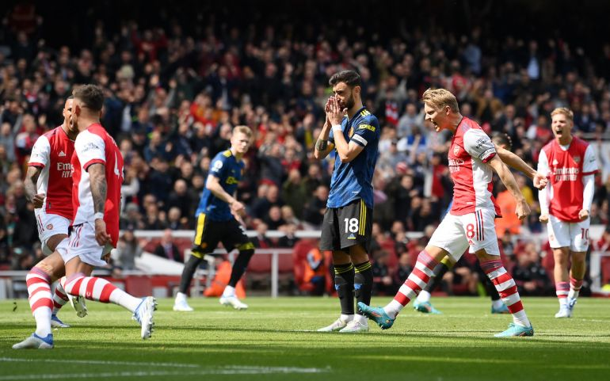

Cựu danh thủ Arsenal, Ian Wright đã sốc khi Bruno Fernandes không để Cristiano Ronaldo đá phạt đền trong trận M.U bị Arsenal đánh bại với tỷ số 1-3.
Quỷ đỏ đã bị đánh bại tại Emirates do các bàn thắng của Nuno Tavares, Bukayo Saka và Granit Xhaka. Cristiano Ronaldo là người níu giữ hy vọng cho Quỷ đỏ với bàn thắng nâng tỷ số lên 2-1 nhưng Bruno Fernandes đã sút hỏng penalty, khiến họ mất cơ hội gỡ hòa.
 Fernandes bỏ lỡ cơ hội quý giá của M.U.Trọng tài Craig Pawson đã chỉ tay vào chấm phạt đền sau khi Tavares để bóng chạm tay, nhưng tiền vệ người Bồ Đào Nha đã bỏ lỡ cơ hội quý hơn vàng cho Quỷ đỏ khi sút trúng cột dọc. Và Ian Wright không hề ấn tượng với cách xử lý của Bruno trong tình huống này. Ông đăng bức hình với gương mặt đang há hốc của mình và ghi: "Không để Ronaldo thực hiện tình huống đó?"
Ronaldo đã thực hiện 3 quả đá phạt gần đây của Manchester United kể từ sau khi Fernandes sút hỏng ở trận thua Aston Villa.
Trận thua trước Arsenal đã khiến Man United càng mất cơ hội dự C1 mùa tới. Hiện ho đang đứng thứ 6 trên BXH, kém 6 điểm so với Arsenal và 4 điểm so với Tottenham, những đội lần lượt đứng thứ 4 và thứ 5. Lịch thi đấu từ đây đến cuối mùa cũng ủng hộ đội chủ sân Emirates giành vé trở lại Champions League.
 Danny Mills liệt kê 8 cầu thủ Ten Hag sẽ tống khứ mà không cần suy nghĩ
Danny Mills liệt kê 8 cầu thủ Ten Hag sẽ tống khứ mà không cần suy nghĩ